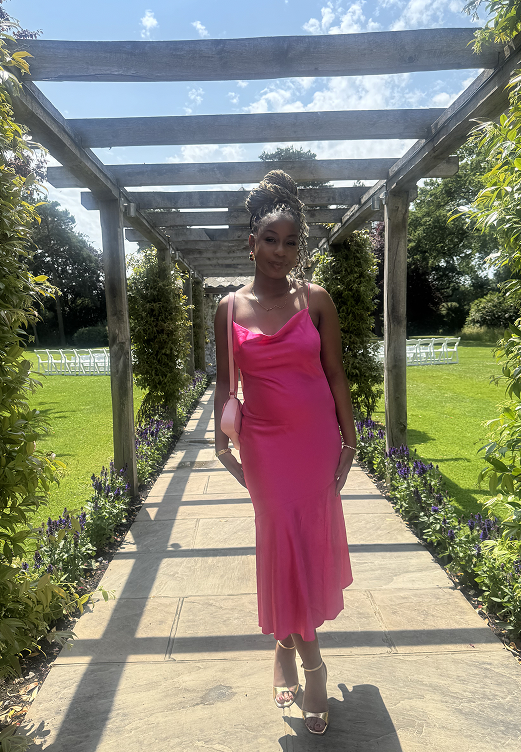

I was raised in Manchester, United Kingdom, and I've always been someone who notices people, details, and the stories behind them. I'm naturally creative, curious, and drawn to understanding how things make people feel.
My interest in both psychology and design led me to study Bsc Interactive Media at the University of York, where I explore how human behaviour and creativity come together in digital experiences.
I've worked as a design deputy for the Interactive Media Showcase and a content creator for Black Access and gained UX experience through my University and personal projects. These experiences shaped how I think, create, and communicate.
When I'm not designing, I'm usually exploring new ideas, spending time with the people I care about, or hanging out with my sister's cat. I'm currently looking for an opportunity where I can learn, grow, and create meaningful work.
